| |
JAPAN 2018!!! =)
Osaka Universal Studios Japan Parque Espana Nagashima Spaland
Hiroshima & Kyoto Tobu Zoo Fuji-Q Highlands
Tokyo Joypolis Tokyo Dome City Yomiuriland Sea Paradise Hamanako Pal Pal Tokyo Disney Resort Yokohama Cosmoworld
Toshimaen
OK. So all the amazingness of Tokyo Disney is now over. But there's still a little more time in Japan left. So hmm. Where am I off to today?
 Hey look! I'm back at Yokohama Cosmoworld. And this time, the weather is actually on my side! So I'm finally gonna get to actually ride the rides here today!
Hey look! I'm back at Yokohama Cosmoworld. And this time, the weather is actually on my side! So I'm finally gonna get to actually ride the rides here today!
So I got here a little early and the rides don't open up quite yet. So...let's check out that mall for about 30 minutes.
Hey look! They have a little peice of the UK in this Japanese Mall (Gee, I wonder where I'm likely heading for my next major international trip).
GUMMY BEARS!!! I love that sh*t!!!
Fun fact. Right by Yokohama Cosmoworld is the Yokohama Landmark Tower, which was the tallest building in Japan at one point.
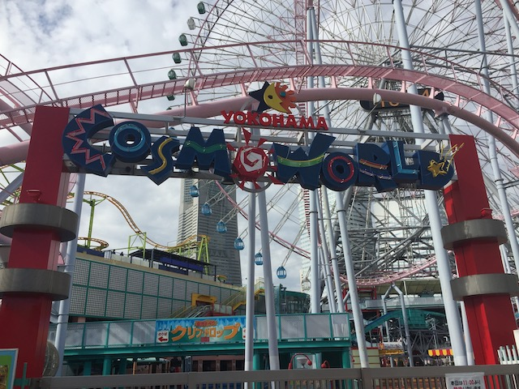
OK. It's 11:00 AM. All the rides are finally opening! Let's get riding!
Just so you see what all Yokohama Cosmoworld has.
One thing to note. Yokohama Cosmoworld is a ticket-only park. Look, most parks in Japan have a ticket option, but at least most of them have an unlimited wristband option as well. Not Yokohama Cosmoworld. You HAVE to pay for each ride. Well, better just do the credits and the rare and unique rides here.
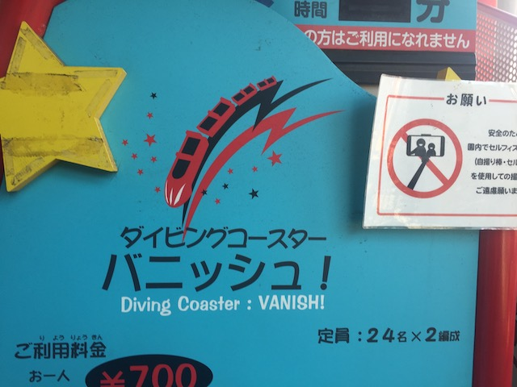
First things first. Time to finally ride Vanish.
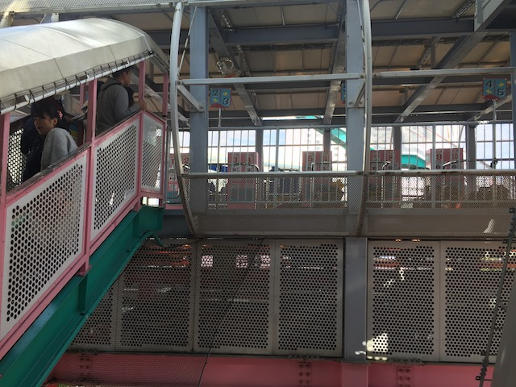
Don't worry. That's still a walk-on.
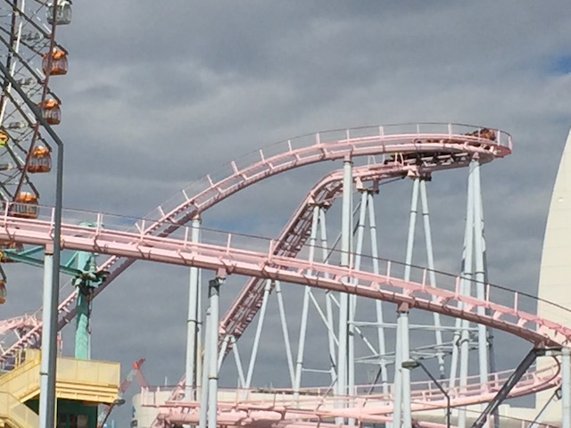
I'm not sure if other enthusiasts are big fans of this ride or not, but I was not impressed with Vanish.
 First off, these restraints are really uncomfortable. I figured they'd just be regular OTSRs. But....something about them just doesn't fit. It sort of awkwardly sticks out. Also, they're not soft at all.
First off, these restraints are really uncomfortable. I figured they'd just be regular OTSRs. But....something about them just doesn't fit. It sort of awkwardly sticks out. Also, they're not soft at all.
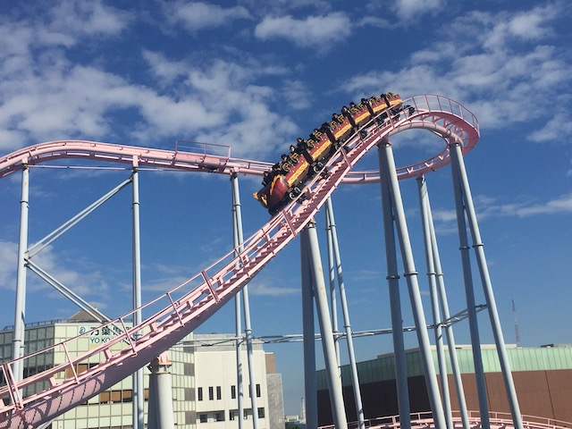
I don't want to say the ride is rough as....yeah. There's a couple headbanging moments. But it's very mild, doesn't really hurt, and just sort of feels awkward.
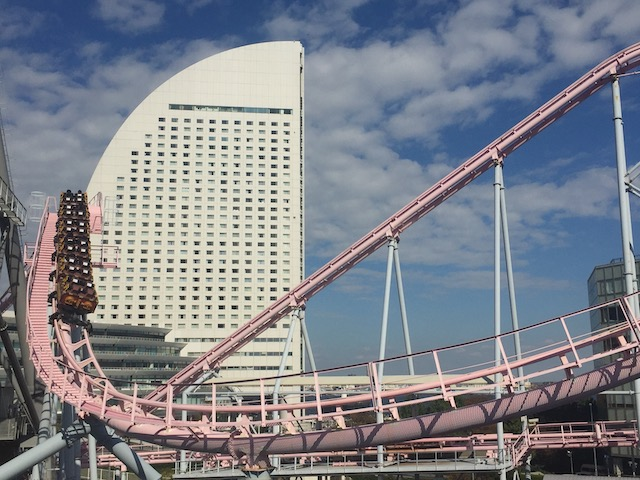
No, the real problem is that it just doesn't really do much and isn't that fast. I was hoping it would be fun and something similar to Surf Coaster. NOPE!!!
 While the ride isn't that good, it actually is semi-known by the GP thanks to this famous water tunnel that intrigues everyone and makes everyone interested in the ride. My own family included. Yeah, its bark may be worse than its bite, but I will admit that this coaster is extremely photogenic and pretty.
While the ride isn't that good, it actually is semi-known by the GP thanks to this famous water tunnel that intrigues everyone and makes everyone interested in the ride. My own family included. Yeah, its bark may be worse than its bite, but I will admit that this coaster is extremely photogenic and pretty.
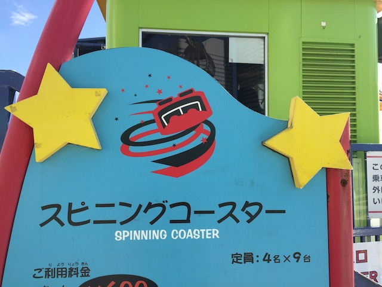
OK. Time to do their spinning mouse now.
 I heard A LOT of stories about how this was one of the spinning mice that spun more than usual. So I was excited about that. But....No.
I heard A LOT of stories about how this was one of the spinning mice that spun more than usual. So I was excited about that. But....No.
 So normally, these rides don't spin for the first half, then when it hits the lower switchbacks, it starts to spin. However, this one didn't start spinning until about halfway through the lower switchbacks. F*CKING LAME!!!
So normally, these rides don't spin for the first half, then when it hits the lower switchbacks, it starts to spin. However, this one didn't start spinning until about halfway through the lower switchbacks. F*CKING LAME!!!
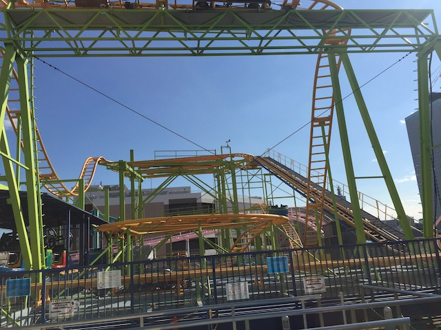
Well, at least it spun somewhat for the little part of the ride it did spin. But yeah. This was one of the weaker spinning mouse coasters. =(
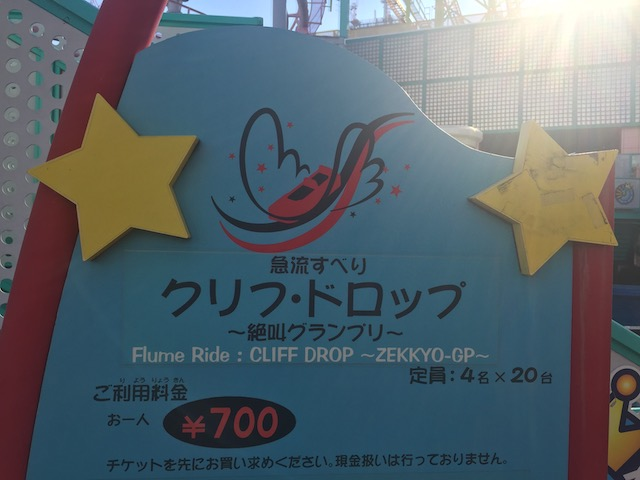
Hmm. Cliff Drop. What are we doing near the parks log flume?
Yeah. I know this is a pay-per-ride park, but I heard so many good things about this log flume that I had to spend a couple yen to ride it. Hey, it's no more expensive than a Pocari Sweat from the vending machine.
BEST LOG FLUME EVER!!!
OK. That was just me pointing out the puny drop.
This is a good log flume, I liked it, but honestly, it felt overrated. Good log flume, but sorry. No airtime.
 SPLOOSH!!!
SPLOOSH!!!
One thing to note about this ride is that it rates your screams. Eh, maybe it's fun with groups. But yeah. I'm the spoilsport that ranks a 0 on the Scream-O-Meter.
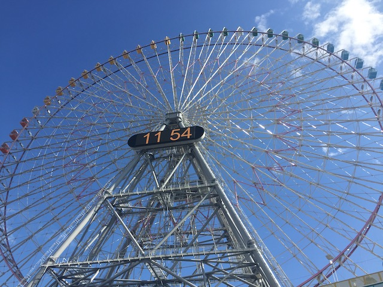
Excuse me. What time is it?
All right. Time to head on over to the other side of the park.
I think I already mentioned this, but I just absolutely LOVE the setting here and just Yokohama in general.
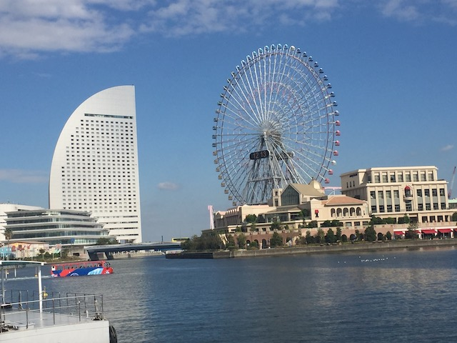
Another thing worth noting. The ferris wheel here, the Cosmo Clock, is actually pretty famous and was at one point, the biggest Ferris Wheel in the world.
 So I just saw this pirate ship and was thinking "Hmm. What's a pirate ship doing over here? Is this just some really cool playground?". Nope. Turns out that this is the Yokohama Port Museum, and was formerly a real ship. Looks cool.
So I just saw this pirate ship and was thinking "Hmm. What's a pirate ship doing over here? Is this just some really cool playground?". Nope. Turns out that this is the Yokohama Port Museum, and was formerly a real ship. Looks cool.
 Yay! We made it to the New Side of the Park!
Yay! We made it to the New Side of the Park!
So the other side of Yokohama Cosmoworld, the newer side, has a lot more rides. But they're primarily smaller rides and more carnival style rides. And are the types of rides that I might've checked out with the unlimited wristband, but pay per ride tickets, I'm not gonna pay to ride an Enterprise or a Disk-O.
Oh yeah. They also have an enterprise among all the rides they have in the new section of the park.
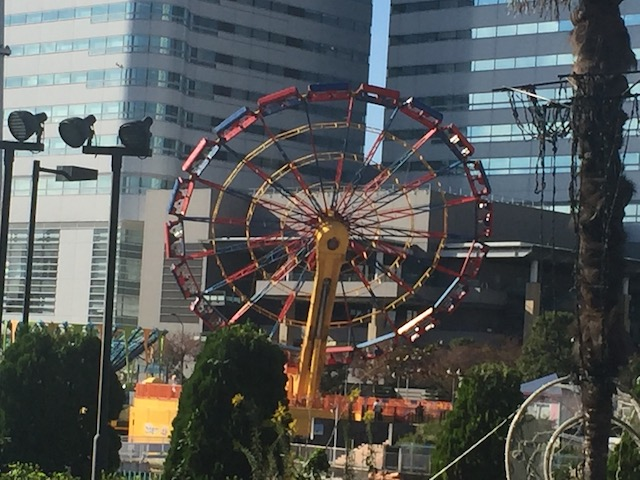
Yeah. Enterprises are really fun rides and all. But I'll just wait and ride the one at CGA or some other park and save my yen.
 Not willing to spend money on the enterprise, but credit whoring is fine with me. ;)
Not willing to spend money on the enterprise, but credit whoring is fine with me. ;)
It's a mediocre kiddy coaster. But I will admit that I do really like the name. So it at least has that going for it. =)
For those of you who collect Hard Rock Cafe credits (they exist), they have one in Yokohama for you. Eh...Not today. Not interested.
I'm sorry Mom & Dad. But I still find it hilarious that you mistaked this statue for a roller coaster (It's a cool statue, but NOT a credit LOL).
Hmm. I like that....it's not a fountain. But hey. It's got water running down it.
I know it's good to eat local stuff, but screw it! I want Shake Shack.
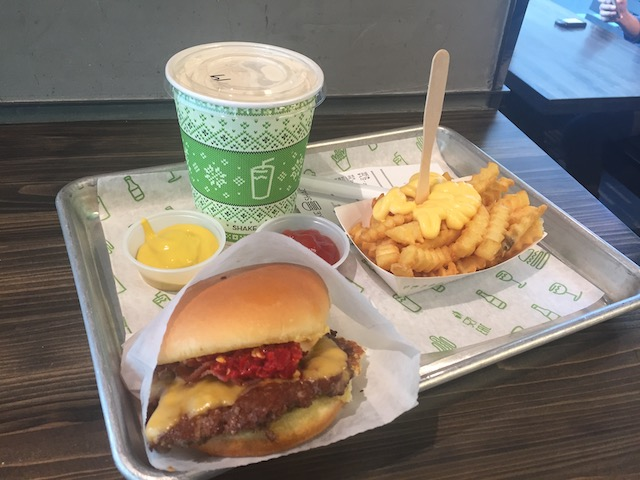
Definetly one of the better burger places, but considering that this is SHAKE shack, yeah. The shakes are really freaking good.
And much like almost all parks in Japan, they have an Ice House. Probably would be praising these things if I decided to visit Japan in the summer instead of the fall.
I found Powdered Toast Man!
 All right. Time to do some Yokohama Cosmoworld photography.
All right. Time to do some Yokohama Cosmoworld photography.
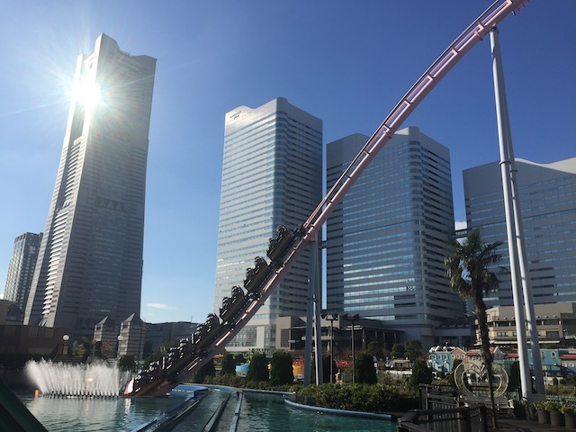
It may not be the best ride ever, but man. This ride is just gorgeous.
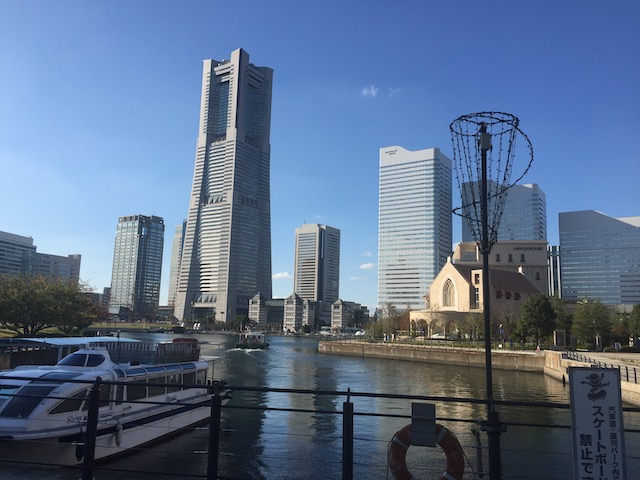
Maybe one of these days, if I come back here, I may actually check out the inside of the Yokohama Landmark Tower.
All right. So long Yokohama Cosmoworld. You're a fun little park with a couple....roller coasters. OK. The roller coasters are not great here. It's mainly credit whoring. But the park has a great atmosphere and just hanging out in Yokohama is really fun.
Time to head back on the train to Tokyo.
It may not be the Shinkansen, but hey. The regular train will do for just going to Yokohama and back.
All right. Getting off at the Tokyo Train Station, which BTW, is really nice.
Hmm. What's a major tourist attraction that I still haven't done with all the time I've spent in Tokyo?
Oh yeah! The Imperial Palace! We still have to check that out!
Here's a map of the Imperial Palace just in case you wanna find the Emporer. =P
Well, OK. We're visiting the Imperial Palace Gardens. The actual Imperial Palace is closed.
Fun fact. The Imperial Palace Gardens are free, but you still need a ticket. I guess so they track how many people visit. But hey. Whatever.
Imperial Palace Gardens Map.
Not sure what specific function this building has and whether it's part of the palace or the gardens.
Really liking these garden tours.
Sure, you can grow a garden to have pretty flowers and just have good landscaping. But you know what they're really best for. Yep. Growing delicous fruits! =D
Hmm. All the fruit that grows in the Imperial Palace Gardens.
So apparently, these are some type of Diospyros kaki. I initally thought these were oranges, but apparently, this is something called Permission. Never had this fruit before. Gonna have to try it sometime.
 Come on! We want more fruit!
Come on! We want more fruit!
Hmm. They've got a lot of open fields here.
And because the Tokyo Imperial Palace was where the old Edo Castle used to be (Castles are everywhere in Japan), you can see the old remnants of that, including the moat.
Bye Imperial Palace. It was good seeing you. I enjoyed your gardens and would like to try your fruit.
With how late it is in the trip, you wouldn't be thinking we're still trying new vending machine drinks. But hey. We're now trying Miracle Body Drink. Apparently this is some sort of weird Sangria style energy drink. Not only does it look like piss, but it has...a weird sort of taste to it. Semi-like Sangria, if you mixed it with Red Bull. Yeah, this drink is a one-and-done.
All right. I wonder what else is a popular attraction in Tokyo that we haven't done yet.
Nothing to see here. Just a foreign dude strolling through the park at night.
Hey look! Yet another temple in Tokyo! These things are a yen a dozen!
Apparently this park has a fancy hotel. No, that's not where I was trying to head.
Yeah. We're heading up the Tokyo Tower. I know I mentioned not being the biggest skyscraper fan. But I have some leftover yen, it's a popular attraction, and should have some amazing views of Tokyo.
And much like EVERYWHERE in Japan, the Tokyo Tower is all decked out for Christmas.
Merry Christmas, from your local friendly...Christmas Lights? These are very weird mascots.
The line for Tokyo Tower elevator is too long for me. =P
Look out bitches! I'm about to head up a tower! =P
So the Tokyo Tower actually does something really cool. They set up projections to make it seem like its snowing over Tokyo. That's actually really freaking cool! I love little touches like that that make this more than just a pretty view.
 Oh yeah. BTW, the views of Tokyo from up here are simply fantastic.
Oh yeah. BTW, the views of Tokyo from up here are simply fantastic.
It really does look great with the illusion of it snowing up here.
More prettiness from inside the Tokyo Tower.
Yeah. I'm only at the halfway point. Didn't think going all the way up would be worth the extra yen. Meh, no big deal.
Continuing to look down on Tokyo and getting that birds eye view. =)
I know you can't see it in this photo, but I distinctly remember seeing a ferris wheel from up here. Not sure which ferris wheel it is, but hey. There are a lot of them in Tokyo.
Where am I again?
Well, we're in the Tower Tower gift shop. So of course, they have a bunch of crap in here.
Anime nerds, this is for you.
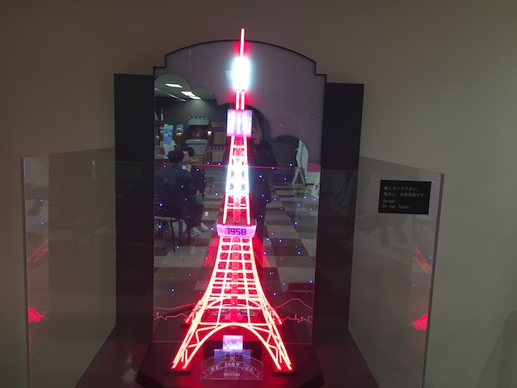
Of course, they're gonna have a model of the Tokyo Tower in the Tokyo Tower gift shop.
Tokyo One Peice Tower? What the hell is that?
So the One Peice Tower is basically the Tokyo Tower with a One Peice Museum inside of it, and thanks to them calling it a "theme park", Clickbait websites will start saying "COME CHECK OUT THE ONE PEICE THEME PARK IN TOKYO!!!" which is really annoying considering that it's not a theme park at all. And most of the theme parks they showcase in those clickbait articles aren't proper theme parks. But hey. If you're a One Peice fan, then this is for you (Never seen an episode of the show, so this is not for me).
 You jealous One Peice fans? ;)
You jealous One Peice fans? ;)
Hey look! A beverage that DOESN'T come from a vending machine!
Hey look! I was just there this morning!
Cartoon Bears with the Tokyo Tower.
Yeah. We know that it's November and too early for Christmas Lights. But everyone else is doing it, and is doing such a good job with them, that we can't be left out.
 OK. We gotta do something authentic for dinner. This seems like a nice little place.
OK. We gotta do something authentic for dinner. This seems like a nice little place.
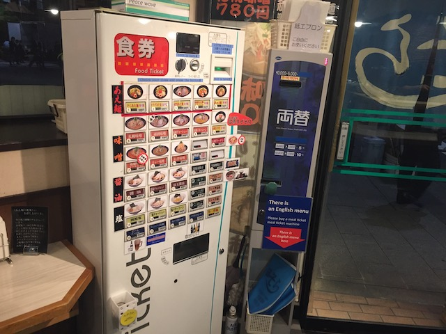
Vending Machine Ramen! OK. The ramen doesn't literally come from the vending machine, but you do choose what ramen you want from the vending machine, pay there, it gives you a ticket, and then the chef makes you your ramen. Even the ramen comes from vending machines here. I love Japan.
I know I've been eating a lot of ramen in Japan, but hey. This is their local food. And the ramen here is great.
Hmm. What will tonights drink be?
All right. Time to try another vending machine drink. And this one is a popular Japanese drink. Surprised it took me this long to get around to trying it. So when you think of Ciders, you think one of two things. #1. This is a drink that is something like apple juice, only unfiltered (That Ned Flanders quote is actually quite helpful). #2. Hard Cider, which is basically an alcoholic drink, and one that I personally really enjoy when at house parties or the VERY rare times I go out to bars. Mitsayu Cider is neither of those things. You see, in Japan (and in East Asia in general), Cider is a sort of Ginger Ale style drink. So this is basically Japan's version of Ginger Ale or their Sprite style drink. Sure, it comes in more flavors because Japan does love flavors, but in general, it's like Ginger Ale. So yeah. It's good. I'd get it again, but this is not gonna be a staple next time I'm in Japan, like Pocari Sweat or Match is.
NO!!! Just one last day in Japan!!! =(
Toshimaen
Home
|